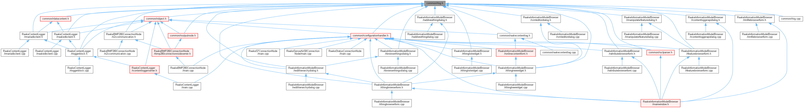
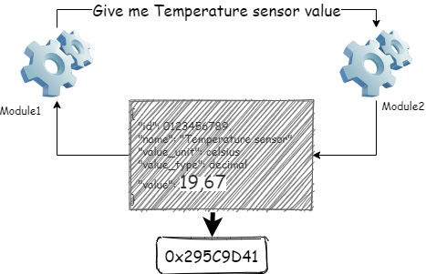
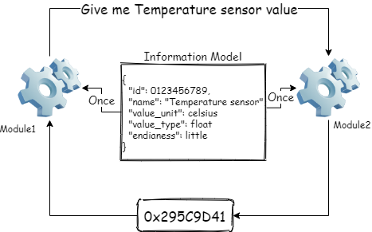

Versatility through simplicity
Software solutions are often very versatility. There are many different modules that communicate with each other. Many different interfaces are needed, the same things are done in several different places, changes affect everywhere, etc.
An open software solution allows for the multidimensionality of software solutions, but it does through simplicity.
Static vs. Dynamic
The picture below shows a basic query, where Module1 asks from Module2 for the value of the temperature sensor. In the case of this example, Module2 return json will return all the data that Module1 needs to process the data.

When we look at the returned json content, we notice that only the number 19.67 is variable data. All other information is permanent, which means that this information only needs to be transmitted once.
The number 19.67 is dynamic data, which in the case of the example is a string. When computer needs to process the number, it must converts to the number format so that the computer can understand it, such as float or double. The value range of a float number is 1.175494351 E - 38 to 3.402823466 E + 38. If we want to store or transfer a float number, we need to handle at least 14 bytes. But...
A float number only needs 4 bytes for the computer, which means that only this number of bytes (32 bits) is needed if we keep dynamic and static data separate.
In a data model-based structure, static information is stored in a data model. Program modules load all the necessary information for their operation when they start execution (only once). This enables an extremely simple interface which can be use to transfer dynamic content. All the information explaining the dynamic content is separate, so the same interface structure can be used to transfer almost all data types (int, text, image, etc.).
In an informatio model-based solution, static information is not transferred with each query, which enables the utilization of dynamic information in new ways. This is possible because new innovations are often incremental. Existing things are combined in new ways. In an information model-based solution, a new purpose of use does not set new requirements for the module who is generating dynamic data.

"Most innovations fail.
And companies that don't innovate die."
---Henry Chesbrough---
People who communicate at the interface of structural gaps are critical for organizational learning and creativity. It is interesting that innovations are not only born in a familiar and safe environment, but in order to create innovations, distance is also needed, which creates differences in ways of thinking, knowledge bases, concepts, expertise and so on. In a more open development activity, new types of distances inevitably arise, which can be a significant factor in improving the productivity of development activities.
Järjestelmät muodostuvat toisiinsa kytkeytyneistä asioista. Asioilla on ominaisuuksia. Järjestelmän toiminnan kannalta on tärkeää kyetä hallitsemaan tätä asioiden muodostamaan kokonaisuutta. Avoimessa ratkaisussa kokonaisuuden hallinnasta tehdään hyvin yksinkertaista, jolloin koko järjestelmän hallinnasta tulee yksinkertaisempaa.
Avoimessa ratkaisussa tieto jakautuu staattiseen ja dynaamiseen tietoon. Koska staattinen tieto ei muutu ohjelman suorituksen aikana, sitä on turha siirtää ohjelmamodiilista toiseen. Tämä tarkoittaa, että rajapintojen yli siirtyy raakatietoa jonka tulkintaa ohjelma tarvitsee staattista tietoa. Ohjelmamoduuli lataa staattisen tiedon käynnistyessään. Tältä osin staattinen tieto onkin kuin ohjelma moduulin konfigutaatiotiedosto.
Avoimessa ratkaisussa staattinen tieto ei kuitenkaan ole pelkästään yhtä ohjelmamoduulia varten. Samaa tietoa voidaan katsoa lukemattomista eri näkökulmista. Esimerkiksi lämpötilatieto voi olla osa lämpömittariohjelmaa, se voi olla osa tutkielmaa, se voi olla osa rakennuksen olosuhdetietoja, yms. Avoimessa ratkaisussa sama asia voidaankin liittää minkä tahansa tietorakenteen osaksi.
Systems consist of interconnected things. Things have properties. In terms of the operation of the system, it is important to be able to manage this whole of things. In an open solution, the management of the whole is made very simple, which makes the management of the entire system simpler.
In an open solution, information is divided into static and dynamic information. Since static data does not change during program execution, it is unnecessary to transfer it from one program module to another. This means that raw data is transferred across the interfaces, which the program needs static data to interpret. The program module loads static information when it starts. In this respect, static information is like the configuration file of a program module.
However, in an open solution, static information is not only for one program module. The same information can be viewed from countless different perspectives. For example, temperature data can be part of a thermometer program, it can be part of a thesis, it can be part of building condition data, etc. In an open solution, the same thing can be connected as part of any data structure.